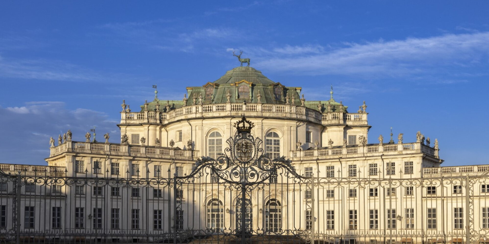
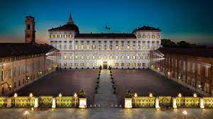
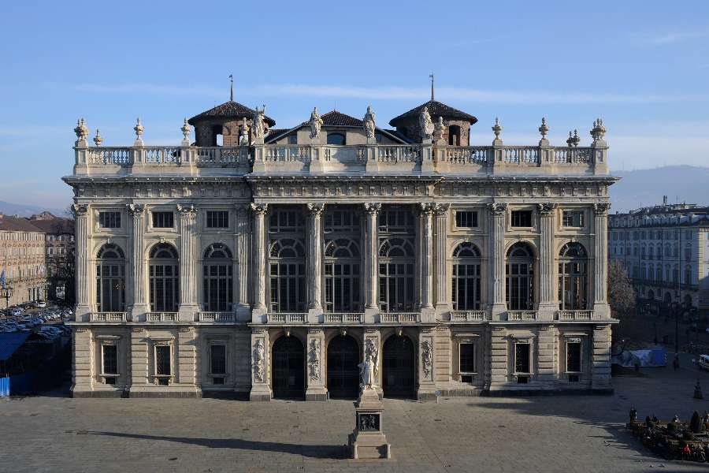
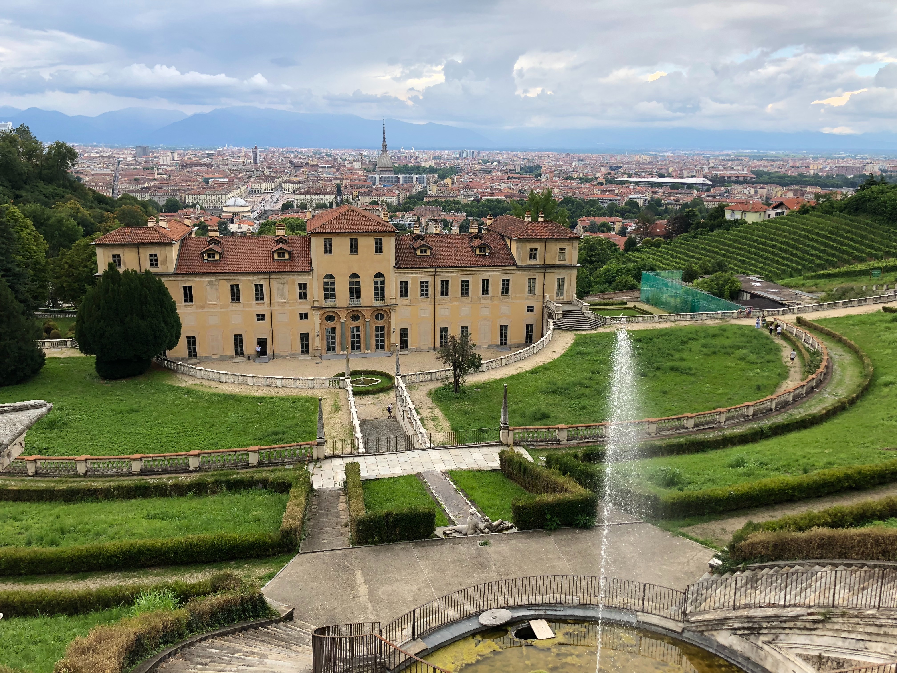
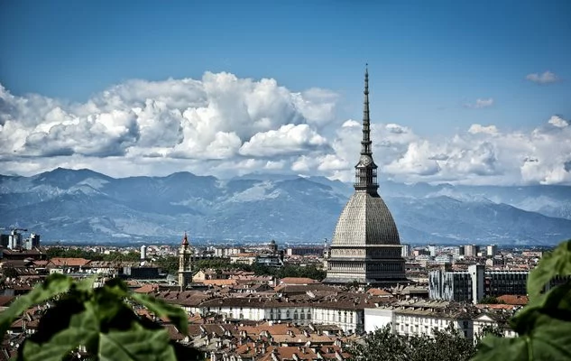

Palazzina di Caccia di Stupinigi

una residenza eretta per i Savoia su
progetto dell'architetto Filippo Juvarra.
Reggia di Venaria

una delle residenze sabaude facente parte del
sito UNESCO.
Palazzo Reale di Torino
l'ex dimora della famiglia reale.
Palazzo Madama
la prima sede del Parlamento italiano.
Villa della Regina

una residenza sabauda facente parte del patrimonio
dell'UNESCO, situata nella parte orientale-collinare
della città.
Mole Antonelliana
la sede del Museo Nazionale del Cinema.